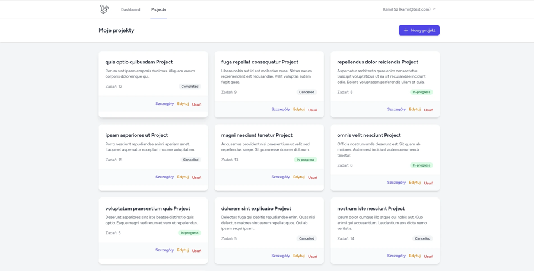
Project Manager
Kanban do zarządzania projektami i zadaniami — dla zespołów, które chcą ogarnąć pracę bez płacenia za Jira czy Trello. Laravel 11/12 + Tailwind + Alpine.js, drag&drop, komentarze, tryb ciemny.
Zobacz kod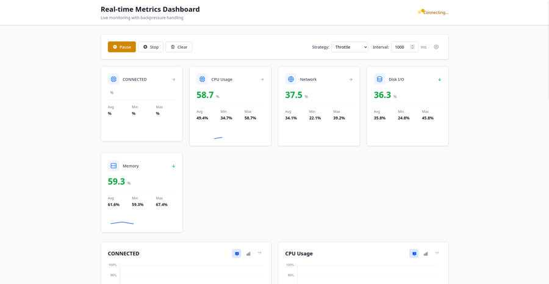
Realtime Dashboard
Dashboard do monitorowania kluczowych metryk systemu (CPU, pamięć, sieć, dysk) na żywo. Przydatny wszędzie tam, gdzie trzeba widzieć stan infrastruktury w czasie rzeczywistym — interfejs zostaje płynny nawet przy setkach aktualizacji na sekundę dzięki Angular + WebSocket + inteligentnemu zarządzaniu przepływem danych.
Zobacz kod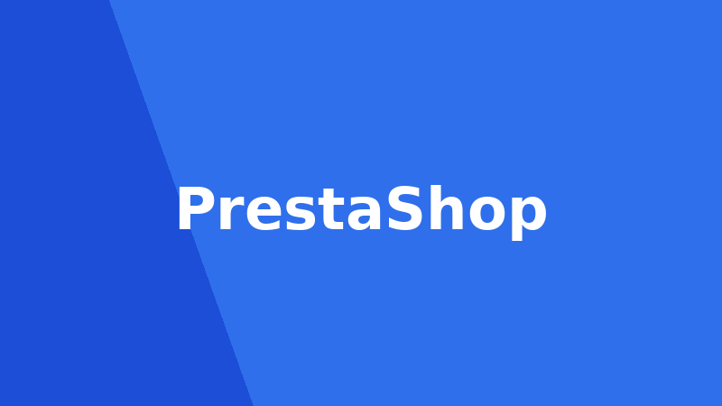
PrestaShop Modules
Zbiór modułów rozszerzających e-commerce dla PrestaShop — każdy odpowiada na konkretną potrzebę biznesową: pakietowanie produktów zwiększające sprzedaż, odzyskiwanie porzuconych koszyków, zarządzanie wieloma magazynami, program lojalnościowy.
Zobacz kod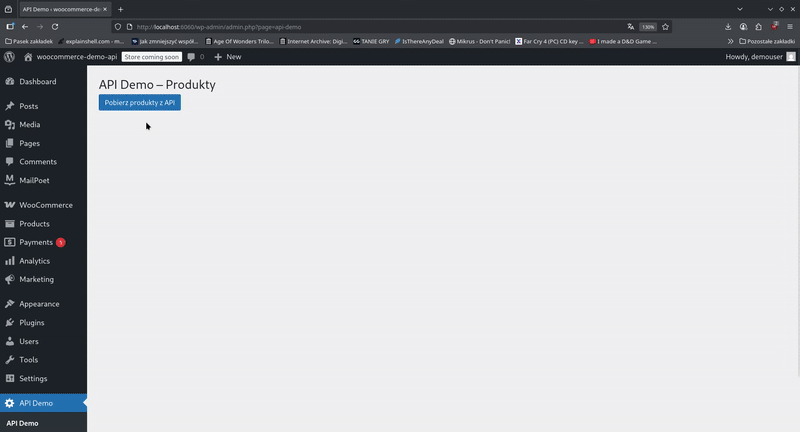
WooCommerce Integration
Demo integracji WooCommerce z zewnętrznym REST API — pokazuje, jak podłączyć sklep do zewnętrznego systemu (np. CRM lub ERP), żeby dane o produktach i zamówieniach synchronizowały się automatycznie.
Zobacz kod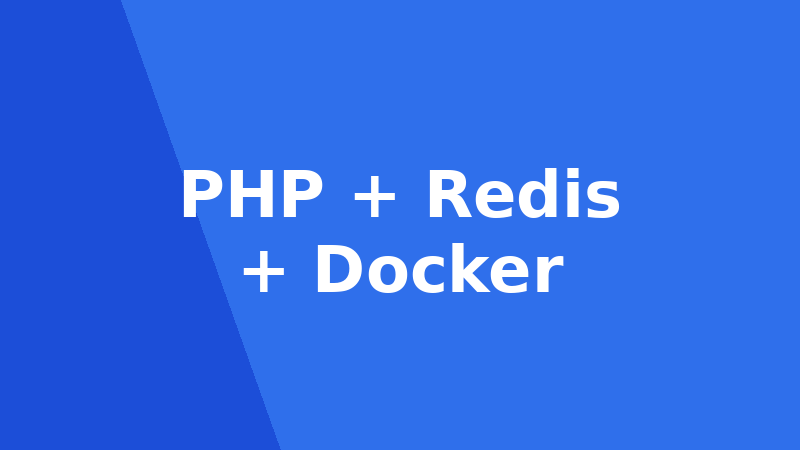
System Kolejek Górskich
API do zarządzania kolejkami górskimi w parkach rozrywki — monitoruje dostępność wagoników i personelu względem liczby klientów i godzin pracy. Przykład systemu operacyjnego czasu rzeczywistego z Redis i Dockerem.
Zobacz kod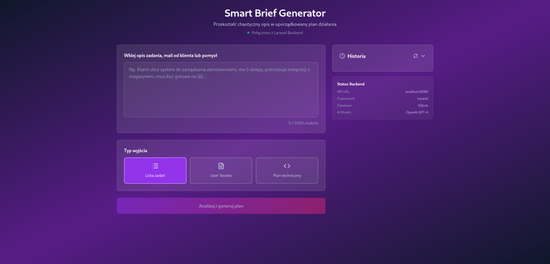
Smart Brief AI
Aplikacja z AI, która zamienia chaotyczny opis (mail od klienta, notatki ze spotkania) w gotowy dokument roboczy: podsumowanie, zadania, pytania i ryzyka. Skraca planowanie projektu z godzin do minut.
Zobacz kod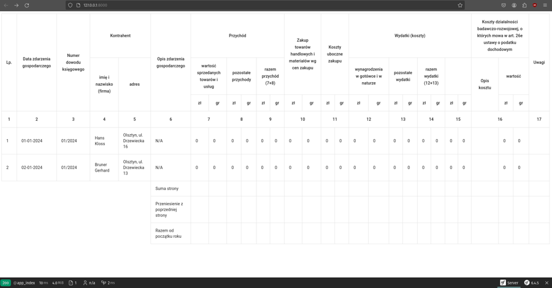
Księga Przychodów i Rozchodów
Elektroniczna księga przychodów i rozchodów (KPiR) dla jednoosobowych działalności — rejestruje przychody/koszty, przechowuje faktury, automatycznie liczy PIT i VAT oraz generuje zestawienia. Zastępuje Excel i papierowe księgi.
Zobacz kod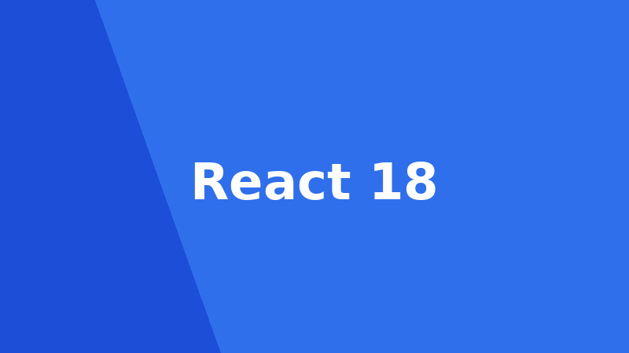
React Frontend Demo
Dashboard do zarządzania zadaniami w React 18 — nowoczesny frontend z filtrowaniem, CRUD i integracją API w czasie rzeczywistym. Baza pod panel klienta albo wewnętrzne narzędzie zespołu.
Zobacz kod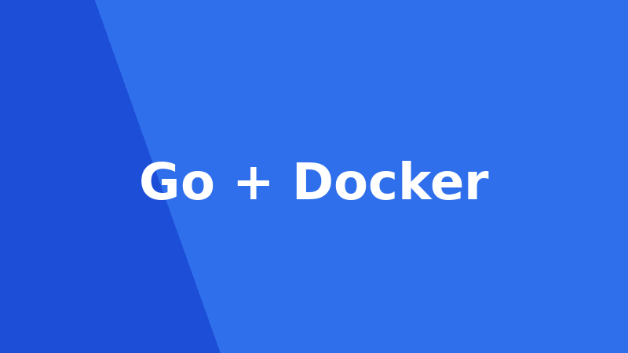
Go Backend Demo
Proste REST API w Go (Gorilla Mux) do zarządzania zadaniami — przykład lekkiego, szybkiego backendu tam, gdzie liczy się wydajność, np. jako mikroserwis obok głównej aplikacji PHP.
Zobacz kod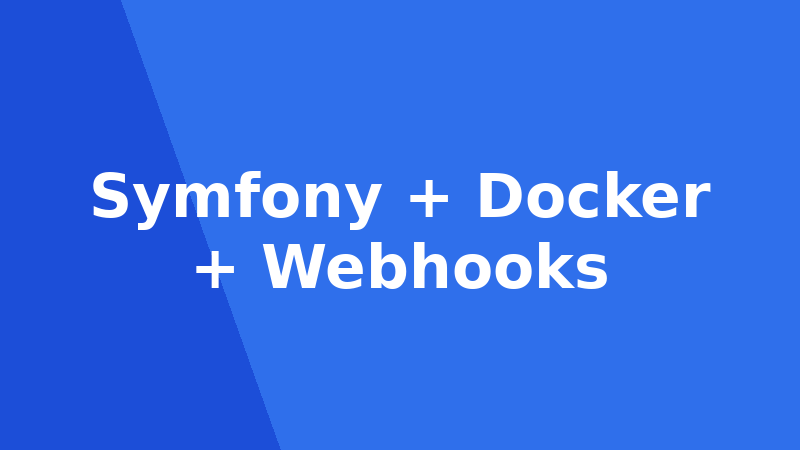
Subscription Service
System zarządzania cyklicznymi subskrypcjami z webhookami płatności i retry logic — szkielet pod SaaS rozliczany abonamentowo. Symfony + Docker + testy, zaprojektowany, by pokazać architekturę backendową i event flow.
Zobacz kod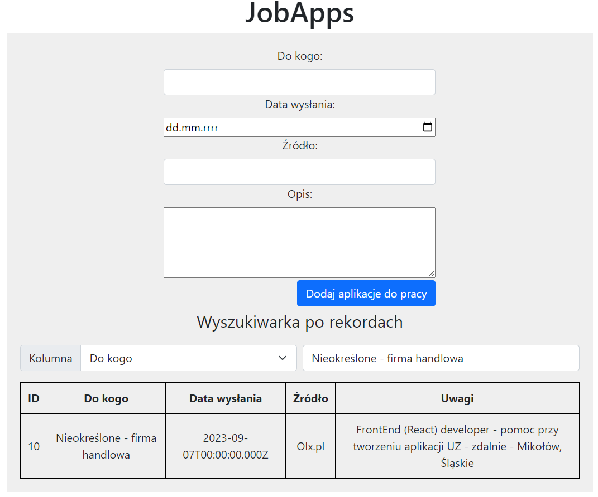
JobApps
Aplikacja do organizacji poszukiwań pracy — śledzi firmy, daty aplikacji i statusy (wysłane / rozmowa / oferta), żeby nie zgubić żadnej szansy. Przydatna też jako szkielet CRM-a do śledzenia leadów.
Zobacz kod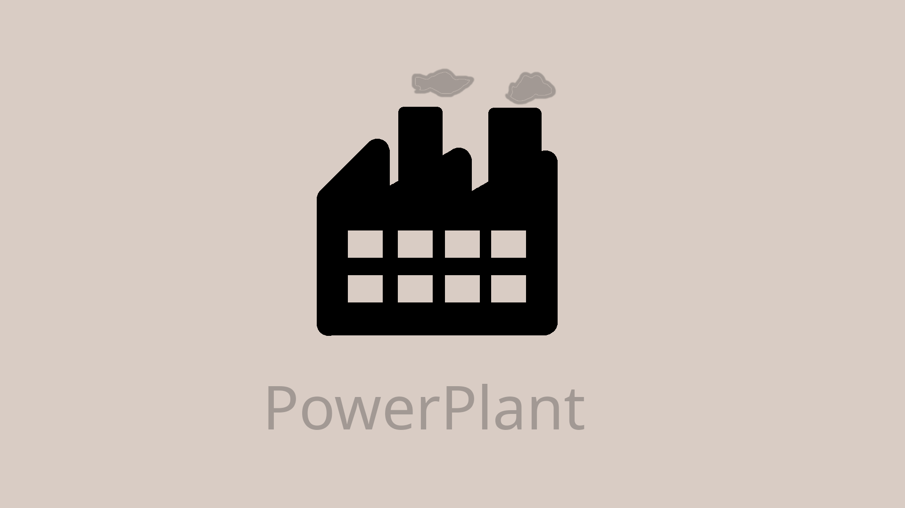
PowerPlant
Symulacja 20 generatorów energii wysyłających dane w czasie rzeczywistym do MongoDB, z dziennymi raportami średniej mocy. Przykład architektury do zbierania i agregowania danych z wielu urządzeń IoT.
Zobacz kod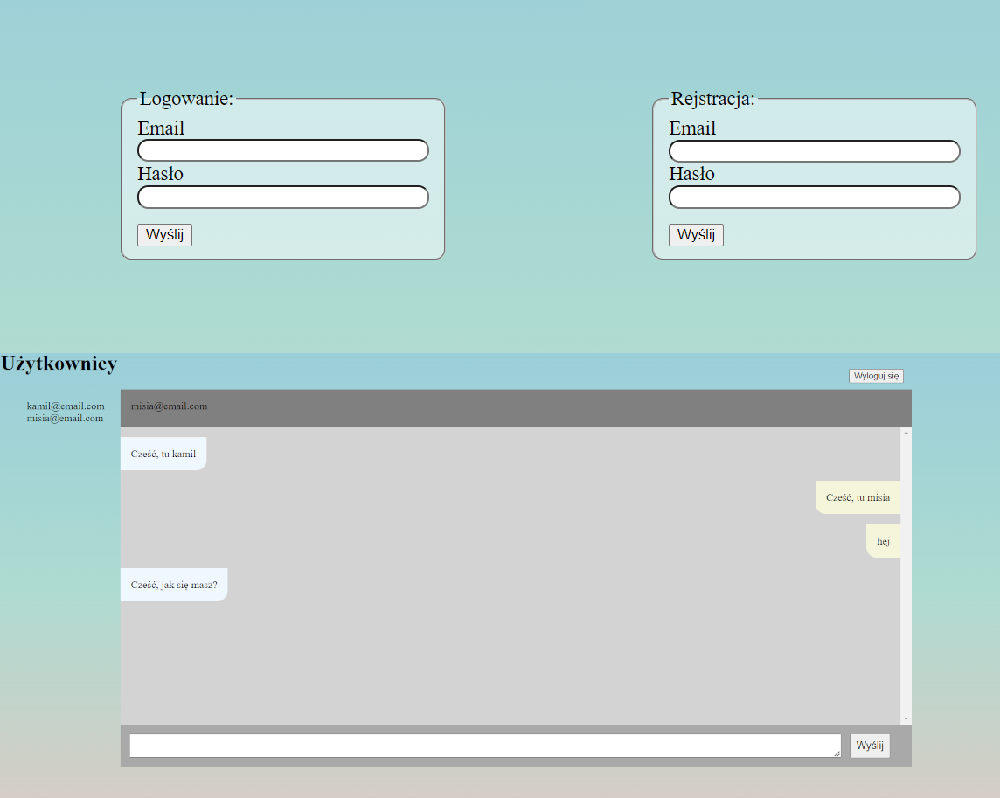
ChatBetweenUsers
Czat między zalogowanymi użytkownikami w czasie rzeczywistym — podstawa pod komunikator wewnętrzny, wsparcie klienta na żywo albo czat w aplikacji SaaS.
Zobacz kod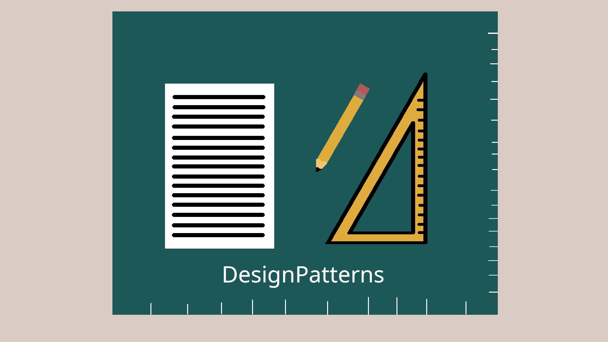
Wzorce projektowe w PHP
Implementacje klasycznych wzorców projektowych w PHP na podstawie "Head First! Design Patterns" — pokazuje znajomość dobrych praktyk architektonicznych, nie tylko "pisania kodu, który działa".
Zobacz kod